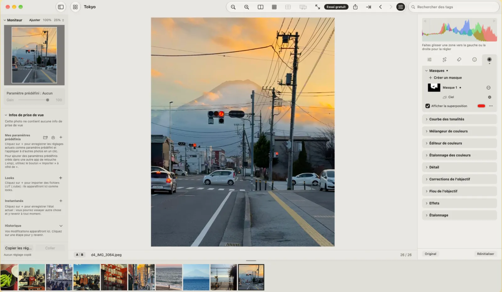

RÉGLAGES
Tout ce qu’il faut pour développer une photo, du premier réglage d’exposition à l’étalonnage final.

Lumière et couleur
Exposition, contraste, hautes lumières, ombres, blancs, noirs, texture, clarté, correction du voile, vibrance et saturation, avec tonalité auto (⌘U · Ctrl+U) et alerte d’écrêtage (J).
Balance des blancs
Température et teinte, préréglages comme Lumière du jour, Nuageux et Tungstène, et une pipette (W).
Courbe des tonalités et mélangeur
Courbe par points en RVB ou par couche, mélangeur 8 couleurs teinte/saturation/luminance et mélange noir et blanc.
Étalonnage et éditeur de couleur
Roues pour les ombres, les tons moyens, les hautes lumières et l’ensemble, et un éditeur de couleur qui peut créer une plage de teint à partir des visages détectés.
Masques
Sujet, ciel, arrière-plan, personnes, objets (d’un clic), pinceau avec masque auto, dégradés linéaire et radial, plage de couleurs et de luminance. Ajouter, soustraire, croiser ou inverser.
Détail, objectif et effets
Netteté, réduction du bruit, correction de profil d’objectif, suppression de l’aberration chromatique, transformation, flou d’objectif IA, vignetage et grain.
Recadrage et redressement
Proportions de 16:9 au carré, retournement, grille des tiers et redressement automatique qui trouve l’horizon.
Préréglages, looks et historique
Importez des préréglages .xmp (intensité 0–200 %) et des looks .cube, prenez des instantanés, revenez dans l’historique, comparez avant/après et collez les réglages sur plusieurs photos.
Éditeur RAW rapide par dossier
Téléchargement gratuit, avec 30 jours d’essai gratuit de toutes les fonctions. Nécessite macOS 26 ou version ultérieure. Windows 10 (64 bits) ou version ultérieure.